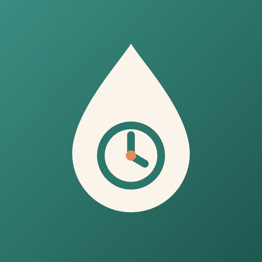

Gizlilik Politikası
Sağım Planı: İşe Dönüş
Son güncelleme: 11 Ekim 2026
Kısaca: Sağım Planı hiçbir kişisel veri toplamaz ve hiçbir sunucuya veri göndermez. Hesap açman gerekmez; uygulamada reklam ve analiz aracı yoktur.
Cihazında saklananlar
Bebeğinin adı (isteğe bağlı) ve doğum tarihi, işe dönüş tarihin, mesai saatlerin, süt izni tercihin, işaretlediğin görevler ve süt stoğu kayıtların yalnızca telefonunda saklanır. Bu bilgiler bize ya da başka birine gönderilmez. Uygulamayı sildiğinde ya da Ayarlar → “Tüm verileri sil”e dokunduğunda hepsi silinir.
Hatırlatmalar
Sağım hatırlatmaları telefonunun kendisinde kurulan yerel bildirimlerdir; internet üzerinden gönderilmez. Bildirim iznini istediğin zaman telefonunun ayarlarından kapatabilirsin.
Paylaşım
“Biberon notunu paylaş” dediğinde not, telefonunun paylaşım menüsünden senin seçtiğin uygulamaya (ör. mesajlaşma) senin isteğinle gönderilir. Bu paylaşımda Sağım Planı'nın bir aracılığı yoktur.
Bağlantılar
Ayarlardaki “Destek” ve “Gizlilik politikası” bağlantıları bu siteyi tarayıcıda açar. Site çerez ya da izleme aracı kullanmaz; barındırma hizmeti GitHub Pages'tir.
Çocuklar
Sağım Planı ebeveynler için yapılmıştır, çocuklara yönelik değildir ve kimseden kişisel veri toplamaz.
Değişiklikler
Bu politika değişirse güncel hali bu sayfada yayımlanır ve yukarıdaki tarih güncellenir.